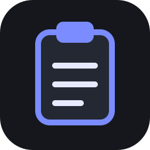
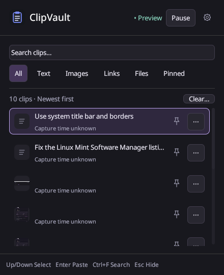

Copy normally
Copy text, a link, an image, or file references. ClipVault saves supported formats while monitoring is on.

ClipVault↓ DownloadFind the text, images, and links you copied earlier. Keep them on your Linux computer, ready to use again.
Which download should I choose?
Copy text, a link, an image, or file references. ClipVault saves supported formats while monitoring is on.
Search your history, then click a clip. Or use ↑ / ↓ to select and Enter to activate it.
ClipVault hides and attempts paste on X11. If automatic paste is unavailable, the item stays copied—press Ctrl + V.
The note you need again. The link you lost. The image you copied a moment ago.
Saved clips survive app restarts. Reboot cleanup is optional and off by default.
Pinned clips stay safe from automatic age and item-count cleanup.
Search saved content and filter by type. Choose a compact list or a comfortable split preview.
Save edited text as a new clip. Your original stays exactly where you left it.
Check GitHub Releases for published packages. This website does not assume v2.0.0 has been published.
For compatible Debian-based systems. The current build baseline is glibc 2.39 (Mint 22 / Ubuntu 24.04).
Check .deb releases ↗Download a published .deb and open it with your package installer, or run:
sudo apt install ./clipvault_VERSION-1_amd64.debReplace VERSION with the downloaded filename.
Keep a portable copy in a stable folder. Host graphics drivers and a compatible Linux runtime are still required.
Check AppImage releases ↗Open file Properties → Permissions, enable executable, then open it. Or use:
chmod +x ClipVault-*.AppImage
./ClipVault-VERSION-x86_64.AppImageIf FUSE is unavailable, try --appimage-extract-and-run. Menu installation is a separate optional step.
RPM packaging is prepared for compatible systems. Installation and desktop behavior require distribution testing.
Check .rpm releases ↗Use an RPM only when it is listed in the release and supports your system:
sudo dnf install ./clipvault-VERSION-1.x86_64.rpmBuilding a package does not prove desktop integration. These are the limits of this release’s testing; “all Linux distributions” remains a goal.
| System / desktop | Session | Capture | Shortcut | Automatic paste | Status |
|---|---|---|---|---|---|
| Mint 22.3 / Cinnamon | X11 | Backend implemented | Desktop-managed | XTEST attempt | Limited |
| Ubuntu 24.04 / GNOME | X11 | Implemented | Desktop-managed | XTEST attempt | Untested |
| GNOME | Wayland | Requires data-control support | Desktop-managed | Manual Ctrl+V | Untested |
| Plasma / MATE / Xfce | X11 / Wayland | Session-dependent | Manual / managed where supported | X11 attempt / manual | Untested |
| Other distributions | Varies | Capability-dependent | Manual setup | Capability-dependent | Untested |
Yes. History, pins, and preferences are stored locally. Optional cleanup can remove unpinned clips. “Clear unpinned history on reboot” is off by default and uses the Linux boot ID, so restarting only ClipVault does not trigger it.
Super is usually the Windows key. ClipVault attempts to create its own desktop shortcut on Cinnamon, GNOME, MATE and Xfce. If another action already owns the combination, choose another shortcut or review Keyboard settings. ClipVault never removes another app’s binding. Shortcuts shows the command for your installed executable and data directory.
For manual setup, add the exact command shown in ClipVault → Shortcuts to your desktop’s custom shortcuts. With a normal system installation, the command is clipvault --toggle.
On X11, ClipVault restores the clipboard, hides, restores the previous application’s focus, waits for modifiers to release, and requests paste. It cannot prove the receiving app accepted that request. Wayland and failed focus checks use the fallback: “Copied—press Ctrl+V to paste.” An explicit Copy action is also available.
No. Phrase exclusions and supported password-manager hints help, but they do not guarantee detection. Application exclusions are approximate on X11 and unavailable on Wayland. Images are not scanned for secret text. Pause monitoring before copying sensitive information.
Normally ~/.local/share/clipvault/, or the ClipVault folder under $XDG_DATA_HOME. See Privacy for your exact location and an Open storage folder button. Files use private account permissions; history is not encrypted.
Install a newer package from the same trusted source. GitHub update checking is optional and does not install packages. A package-manager repository has preparation scripts but is not advertised as live. ClipVault detects newer executable replacements and defers restart while an edit is open. Back up your whole storage folder while ClipVault is stopped.
Open a GitHub issue with your distribution, desktop, X11 or Wayland session, package version, and reproduction steps. Remove private clipboard content from logs and screenshots.
Free, open source, and right on your computer.